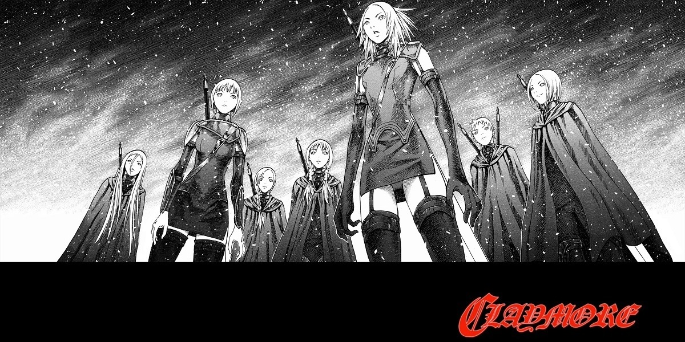

Sobre a obra
Claymore (クレイモア, Kureimoa?) é um mangá escrito e ilustrado por Norihiro Yagi e publicado pela Monthly Shonen Jump desde 2001. A revista foi encerrada e a obra foi movida para a Jump Square. Uma adaptação para anime foi feita pela Madhouse em 2007 e exibida pela Nippon TV, contendo 26 episódios com 23 minutos de duração cada.
Em outubro de 2014, o último capítulo foi finalmente publicado, encerrando o mangá com 155 capítulos e 27 volumes.
História
A história se passa em um mundo fictício semelhante à era medieval europeia, que consiste num único continente dividido em 47 regiões. Nesse mundo, seres-humanos coexistem com criaturas chamadas Youma, monstros que se alimentam de vísceras humanas. Os Youma são capazes de adquirir a forma de suas vítimas, absorvendo as memórias e personalidade de sua presa, permitindo que eles enganem amigos e familiares e se infiltrem nas vilas para se alimentar sem levantar suspeitas para si.
Devido à situação, uma organização sem nome e altamente secreta criou uma ordem de guerreiras modificadas com o objetivo de proteger os humanos. Estas vieram a ser chamadas popularmente de Claymores, devido as imensas espadas claymore que portam. Comumente, as vilas sob ataque de Youmas contratam seus serviços para eliminar as criaturas (uma vez que são as únicas que são capazes de destingir um humano de um Youma).
A organização é a única que tem contato direto com essas guerreiras, mantendo o controle seus serviços, tanto aqueles requisitados pelas cidades quantos missões internas. Cada pedido de aniquilação de Youmas tem um custo altíssimo e apenas após o sucesso da missão o pagamento é feito, sempre recebido por um homem de preto que vem à cidade logo após a saída da Claymore. Caso a guerreira morra e não termine o serviço, não é necessário pagar. Também existem boatos de cidades que se recusaram a pagar e foram dizimadas pouco tempo depois por ataques consecutivos dos monstros, sem qualquer resposta de ajuda por parte da organização.